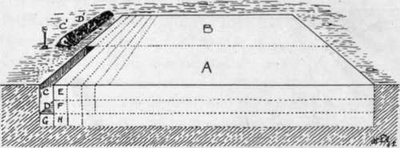

Bastard Or False Trenching
Description
This section is from the book "School Gardening", by W. Francis Rankine. Also available from Amazon: School Gardening.
Bastard Or False Trenching
The object of trenching is to move the soil to a greater depth than can be done in digging. When it is done efficiently the depth will be two feet or three feet compared with the one foot of good digging. It is most desirable to bastard trench new ground, for, by means of this process, a deep soil is obtained, and the roots of weeds are easily removed. At the outset it is of the utmost importance to remember that in bastard trenching, the surface soil must not be buried ; neither must the subsoil be brought to the surface. The reasons are these ; the soil contains the plant food that has resulted from the action of the soil-making agents which has been going on for many years ; if this surface soil is buried it is useless, and its food supply is lost. The subsoil contains plant food, but it is unavailable because it has been buried beyond the essential atmospheric influences, unless, of course, bastard trenching has been done regularly, when true or full trenching can be advantageously carried out, as will be explained. At first sight, it may appear difficult to prevent the subsoil from being brought to the surface ; it is, however, quite simple to bastard trench a garden plot so that the surface soil is kept on the surface and the subsoil is kept underneath, while at the same time the entire mass of soil is moved. This is made clearer by a diagram (Fig. 4) ; in the case of a large piece of garden the line should be placed across the plot so that two equal portions, A and B, are formed. At X dig a trench, two feet to three feet wide, and one spade deep ; these sections C and D, are moved to C and D' ; this is surface soil. Next, take out E, the subsoil, to a depth of one spade and a width of two spades ; place this earth by itself at E'. Now dig the bottom of the trench E a spit deep, but do not move the soil out ; this ensures that the soil is loosened to a depth of three spits, or nearly three feet. The trenching may now proceed; move the subsoil in F into the trench E, and the surface section J into C ; dig the soil F in exactly the same way as G was worked. Then K is moved to F. By this method the surface layer and subsoil layer are worked forward section by section, and the relative position of these layers is not changed. However, the cultivation makes it possible for air to penetrate to a greater depth than in the case of ordinary digging, so that in time the subsoil is sweetened by aeration. When Y is reached, three sections of soil must be brought from B in order to level the portion A. It is done as follows ; the surface section P is placed in L, and the subsoil section under P is placed in N. Q is then moved to M and the same operations continued until Z is reached and three more sections of soil are required. These aie obtained from the heaps taken from the first trench, but care must be taken to place the subsoil E in its proper place, viz., underneath. In trenching a smaller piece of ground the division need not be made, and by means of a wheelbarrow, C, D, and E may be taken to the other end of the plot at once. The natural manure should be either spread on, or worked into the subsoil, but in no circumstances must it be covered more deeply than two and a half feet beneath the surface.
Fig. 4. Bastard Trenching.
Fig. 5. full trenching.
Where a wheelbarrow is not available the plot to be trenched is divided as shown into the two parts A and B. Two spits of soil C and D are removed as indicated to C and D'. The surface layer E is thrown into D and F takes the place of C. G and H are forked over as in Fig. 4. The earth from C and D' is used to fill the last trench.
True Trenching
When bastard trenching has been consistently and thoroughly done for three or four years the subsoil will have become so much ameliorated that substantial advantages will be secured by full trenching, in which process the positions of the surface and subsoils are reversed as is clearly shown in the diagrammatic illustration, Fig. 5.
Surface Cultivation
However energetically the digging and trenching operations have been carried out, the cultivation of the soil is not complete. Before the seed beds are prepared the ground must be forked and raked to remove weeds and secure a level surface of fine soil. When the crops are growing, the soil requires constant attention, and this calls for surface cultivation. The hoe is the implement for this purpose, and the object is to obtain a loose, dusty soil round the growing plants. It is clear to the thoughtful person that soils hold moisture, and that evaporation is constantly progressing under the influence of the sun's heat. It should be the gardener's aim to retain the moisture for the benefit of his crops; and surface cultivation, viz., hoeing, is the method he employs. These surface operations are especially necessary for certain crops, but to these attention will be drawn in subsequent chapters. While urging the necessity for looseness of the surface it will be opportune to insist upon moderate firmness of the soil beneath, for root-hairs (correctly elongations of the cells of the fibrous roots)-true plant feeders-are not produced by the fibrous roots as freely in loose as they are in firm soil. Hence sandy lands must always be thoroughly trodden down before seeding or planting.
Drainage
The presence of excessive moisture in the soil is injurious, retarding the germination of seeds and the development of root-hairs by making the soil cold and sour. Although many of the most important crops are essentially moisture lovers-Celery and Seakale to wit-any approach towards stagnation is fatal to success. Light, sandy soils drain naturally and often to excess unless they are consolidated by treading or rolling. Stronger mediums, however, with their infinitely greater power of holding moisture frequently demand artificial drainage, but it should not be resorted to except under compulsion as the operation is tedious and expensive. Such an elaborate process does not come within the scope of a school garden pupil who places reliance upon runnels and ditches to take away superfluous water. To ascertain whether drainage is necessary a hole three feet deep should be dug in the autumn and covered with boards to exclude rain ; if, subsequently, water rises in the hole to within two feet three inches of the surface, the water table lies too high and the soil requires draining. Deep and thorough cultivation by improving the physical condition of the land reduces the necessity for artificial drainage.
Continue to: